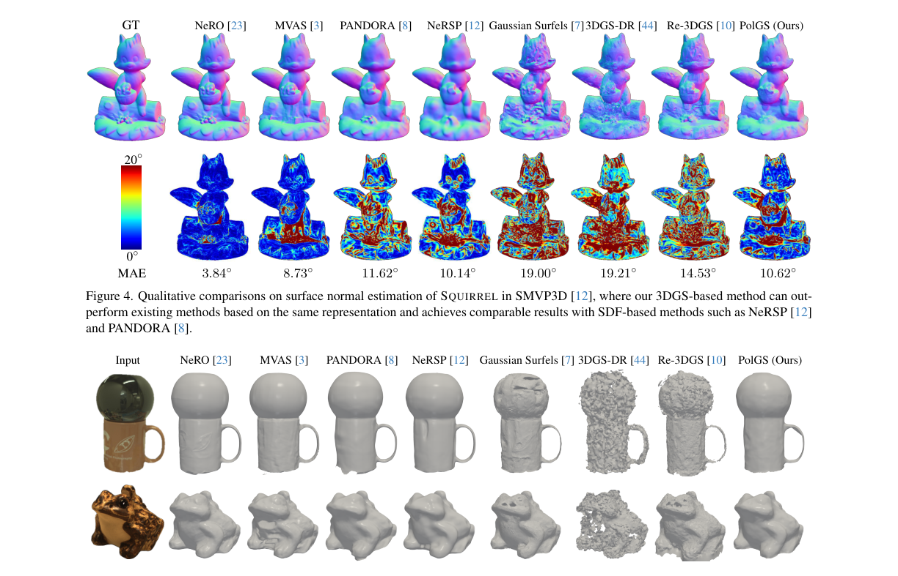
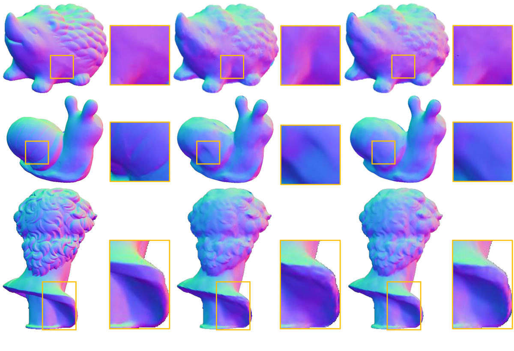
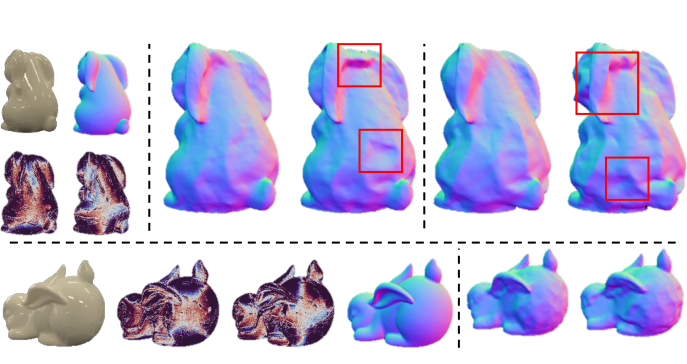

PolGS
简单摘要
这篇工作要解决的问题是：具有复杂反射特性的表面的高效形状重建对于实时虚拟现实至关重要。
对应的核心做法是：虽然基于 3D 高斯泼溅 (3DGS) 的方法通过利用其显式表面表示提供快速新颖的视图渲染，但它们的重建质量落后于隐式神经表示，特别是在恢复表面的情况下……。
从机制上看，关键设计在于：为了解决这些问题，我们提出了 PolGS，这是一种偏振高斯泼溅模型，允许在 10 分钟内快速重建反射表面。
训练或推理层面的重点是：通过将偏振约束集成到 3DGS 框架中，PolGS 有效分离镜面反射和漫反射分量，从而提高具有挑战性的反射材料的重建质量。
实验层面的主要信号是：合成数据集和真实数据集的实验结果验证了我们方法的有效性。


简而言之，这篇论文关注的核心是：这篇工作要解决的问题是：具有复杂反射特性的表面的高效形状重建对于实时虚拟现实至关重要。 对应的核心做法是：虽然基于 3D 高斯泼溅 (3DGS) 的方法通过利用其显式表面表示提供快速新颖的视图渲染，但它们的重建质量落后于隐式神经表示，特别是在恢复表面的情况下……。 从机制上看，关键设计在于：为了解…
这篇工作要解决的问题是：快速准确地重建反射表面对于实时虚拟现实和逆渲染等应用至关重要。
对应的核心做法是：反射表面在 3D 重建中面临着独特的挑战，因为它们的镜面特性需要精确处理光相互作用以捕获真实的表面细节。
从机制上看，关键设计在于：需要开发一种快速、准确的反射表面重建方法。
训练或推理层面的重点是：对于反射表面重建，大多数现有方法依赖于隐式神经表示，例如 Ref-NeRF 和 NeRO，它们可以有效地模拟复杂的表面细节，但由于其隐式神经网络结构，处理时间很慢……。
实验层面的主要信号是：虽然有符号距离函数 (SDF) 提供了更好的几何表示，但 MLP 网络会产生大量时间成本。
核心创新
综合引言与方法部分，这篇论文的核心创新可以概括为以下几方面：
1）问题定义与研究动机
这篇工作要解决的问题是：快速准确地重建反射表面对于实时虚拟现实和逆渲染等应用至关重要。
对应的核心做法是：反射表面在 3D 重建中面临着独特的挑战，因为它们的镜面特性需要精确处理光相互作用以捕获真实的表面细节。
从机制上看，关键设计在于：需要开发一种快速、准确的反射表面重建方法。
训练或推理层面的重点是：对于反射表面重建，大多数现有方法依赖于隐式神经表示，例如 Ref-NeRF 和 NeRO，它们可以有效地模拟复杂的表面细节，但由于其隐式神经网络结构，处理时间很慢……。
实验层面的主要信号是：虽然有符号距离函数 (SDF) 提供了更好的几何表示，但 MLP 网络会产生大量时间成本。
2）方法框架与核心模块
这篇工作要解决的问题是：我们的 PolGS 框架集成了多视图偏振图像、其相应的掩模和相机姿态信息，以产生丰富的输出，其中包括表示为跨不同视图的斯托克斯向量的漫反射和镜面反射分量、重建的几何体……。
对应的核心做法是：在本节中，我们将分析基于 SDF 的方法和 3DGS 方法中使用的表面法线表示。
从机制上看，关键设计在于：然后我们介绍了偏振引导重建流程的理论基础。
训练或推理层面的重点是：0.7em 表面法线表示分析 在隐式神经网络中，它们使用有符号距离来确定点是否在表面上，并通过计算 SDF 的梯度来获得表面法线。
实验层面的主要信号是：然而，3DGS 方法通常通常将表面法线视为固有属性。
3）实验设计与工程价值
这篇工作要解决的问题是：为了评估我们方法的性能，我们进行了这些实验。
对应的核心做法是：1）合成数据集上的形状重建，2）真实数据集上的形状重建，3）辐射分解和4）极化约束添加的消融研究。
从机制上看，关键设计在于：1.4emDataset 我们使用三个数据集来评估我们的方法。
训练或推理层面的重点是：合成数据集 、真实世界数据集 和 ，由于缺乏基本事实，只能用于定性评估。
实验层面的主要信号是：所有这些方法（除了 ）都可以处理反射表面。
技术细节
下面按照论文的方法章节结构展开，重点说明模型的关键模块、公式设计和训练策略。
这篇工作要解决的问题是：我们的 PolGS 框架集成了多视图偏振图像、其相应的掩模和相机姿态信息，以产生丰富的输出，其中包括表示为跨不同视图的斯托克斯向量的漫反射和镜面反射分量、重建的几何体……。
对应的核心做法是：在本节中，我们将分析基于 SDF 的方法和 3DGS 方法中使用的表面法线表示。
从机制上看，关键设计在于：然后我们介绍了偏振引导重建流程的理论基础。
训练或推理层面的重点是：0.7em 表面法线表示分析 在隐式神经网络中，它们使用有符号距离来确定点是否在表面上，并通过计算 SDF 的梯度来获得表面法线。
实验层面的主要信号是：然而，3DGS 方法通常通常将表面法线视为固有属性。
$$ G(\textbf{x};\textbf{x}_i,\Sigma_i)=\text{exp}(-\frac{1}{2}(\textbf{x}-\textbf{x}_i)^\top\Sigma_i^{-1}(\textbf{x}-\textbf{x}_i)), $$
这条公式用于定义模型中的核心计算关系：左侧给出目标量，右侧由输入与参数共同决定。阅读时可先关注 G、x 的物理/几何含义，再看它们如何影响训练目标或渲染结果。
$$ \begin{aligned} \Sigma_i &= \textbf{R}(\textbf{r}_i)\textbf{s}_i\textbf{s}_i^\top\textbf{R}(\textbf{r}_i)^\top\\ &= \textbf{R}(\textbf{r}_i)\text{Diag}[(s^x_i)^2,(s^y_i)^2,0]\textbf{R}(\textbf{r}_i)^\top, \end{aligned} $$
这条公式用于定义模型中的核心计算关系：左侧给出目标量，右侧由输入与参数共同决定。阅读时可先关注 R、r、s、x_i 的物理/几何含义，再看它们如何影响训练目标或渲染结果。
$$ C=\sum_{i=0}^nT_i\alpha_ic_i, $$
这条公式用于定义模型中的核心计算关系：左侧给出目标量，右侧由输入与参数共同决定。阅读时可先关注 C、i 的物理/几何含义，再看它们如何影响训练目标或渲染结果。
$$ G'(\textbf{u};\textbf{u}_i,\Sigma'_i)=\text{exp}(-\frac{1}{2}(\textbf{u}-\textbf{u}_i)^\top {\Sigma'_i}^{-1}(\textbf{u}-\textbf{u}_i)), $$
这条公式用于定义模型中的核心计算关系：左侧给出目标量，右侧由输入与参数共同决定。阅读时可先关注 G、u 的物理/几何含义，再看它们如何影响训练目标或渲染结果。
$$ \tilde{D}=\frac{1}{1-T_{n+1}}\sum_{i=0}^{n}T_i\alpha_id_i(\textbf{u}), $$
这条公式用于定义模型中的核心计算关系：左侧给出目标量，右侧由输入与参数共同决定。阅读时可先关注 D、n、i、T_i 的物理/几何含义，再看它们如何影响训练目标或渲染结果。
$$ \tilde{N}=\frac{1}{1-T_{n+1}}\sum_{i=0}^{n}T_i\alpha_i\textbf{R}_i[:,2]. $$
这条公式用于定义模型中的核心计算关系：左侧给出目标量，右侧由输入与参数共同决定。阅读时可先关注 N、n、i、T_i 的物理/几何含义，再看它们如何影响训练目标或渲染结果。



把全文方法串起来看，这篇论文的逻辑基本都遵循同一条主线：先把输入组织成更容易处理的表示，再通过模型结构和损失函数把这个表示推向目标输出，最后用可视化与数值实验共同证明该设计有效。
实验结论
实验部分主要回答两个问题：第一，方法是否真的优于已有基线；第二，这种优势来自哪一个设计决策。
这篇工作要解决的问题是：为了评估我们方法的性能，我们进行了这些实验。
对应的核心做法是：1）合成数据集上的形状重建，2）真实数据集上的形状重建，3）辐射分解和4）极化约束添加的消融研究。
从机制上看，关键设计在于：1.4emDataset 我们使用三个数据集来评估我们的方法。
训练或推理层面的重点是：合成数据集 、真实世界数据集 和 ，由于缺乏基本事实，只能用于定性评估。
实验层面的主要信号是：所有这些方法（除了 ）都可以处理反射表面。

- 方法在核心指标上的优势与结构设计和训练目标直接相关；
- 消融实验表明，拿掉关键模块后性能与结果质量都有明显回落；
- 论文不仅比较数值，也关注可视化质量、稳定性和泛化能力等更贴近真实使用的信号。
理解评价
这篇工作要解决的问题是：PolGS 利用偏振信息基于 Stokes 场分离漫反射和镜面反射分量，这有助于约束高斯溅射表示中的表面法线，并最终改善反射表面重建……。
对应的核心做法是：大量实验表明，PolGS 在准确性和效率方面优于最先进的 3DGS 方法。
如果把它当成研究参考，建议重点关注三件事：第一，这套方法真正依赖的归纳偏置是什么；第二，实验中真正拉开差距的模块是哪一个；第三，它的局限究竟来自数据、算力还是监督信号本身。
以下相关论文可以作为进一步追踪的入口：